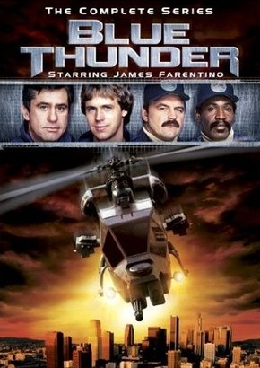
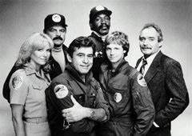

Baseado no filme homônimo estrelado por Roy Scheider, de Tubarão e Malcolm McDowell, o Alex DeLarge de Laranja Mecânica, o seriado Trovão Azul contou apenas com uma temporada, mesmo contando com um elemento de sucesso para programas da década: uma máquina de alta tecnologia e muito poder.
No longa Frank Murphy (Scheider) é piloto de um helicóptero militar de ultima geração adaptado para o uso policial, com modernas armas de destruição, microfones e câmeras, modo de vôo camuflado e outros acessórios.
Murphy é um tira durão de Los Angeles e veterano da Guerra do Vietnam que acaba descobrindo seu antigo nemesis, Coronel Cochrane (MacDowell) envolvido numa trama política. O filme foi dirigido por John Badham (Alta Tensão) e recebeu indicação ao Oscar de melhor edição.
No seriado o piloto era o tenente Frank Chaney que teve como parceiro o novato Clinton 'JAFO' Wonderlove. No apóio terrestre os pilotos contavam com a ajuda do Capitão Braddock e o par Lyman 'Bubba' Kelsey e Richard 'Ski' Butowski.